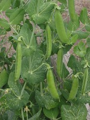

スナップエンドウの生産量
いちばん多くとれる都道府県
スナップエンドウが日本でいちばん多くとれるのは鹿児島県です。3,080 tで、全国（5,890 t）の52%を占めます。

| 順位 | 都道府県 | 収穫量 | 全国に占める割合 |
|---|---|---|---|
| 1位 | 鹿児島県 | 3,080 t | 52% |
| 2位 | 熊本県 | 886 t | 15% |
| 3位 | 愛知県 | 524 t | 8.9% |
この数字について
- 分類：マメ科
- 全国の収穫量：5,890 t
- この数字が表すもの：収穫量（畑や田でとれた重さ）
- 調査：地域特産野菜生産状況調査 令和4年産
- 38県分を調査（調査していない県は順位に入りません）